强化学习笔记（七）时序差分方法
时序差分算法概述
时序差分（Temporal-Difference, TD）方法是强化学习中最核心的无模型学习技术之一，它结合了蒙特卡洛方法的采样能力与动态规划的自举思想，能够在无需环境模型的情况下进行在线、增量式更新。
核心思想是利用当前状态的价值估计与下一状态的价值估计之间的差异（TD误差）来更新价值函数。包括状态值的td学习、动作值的td学习、最优动作值估计的TD学习
时序差分算法的目的和公式推导
时序差分算法的目标是求解state value，更具体的目标是把一个状态下的最优策略找到。
需要指出的是td learning也是一种强化算法，但和这里特指的时序差分学习不一样。
td 算法的输入是在一个策略下生成的轨迹，又称experience。 td算法的目的是估计一个具体的策略下的状态值
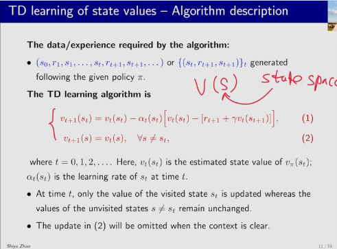
对于访问到的状态，用第一个式子更新， 对于所有没访问到的状态，用第二个式子（保持不变）
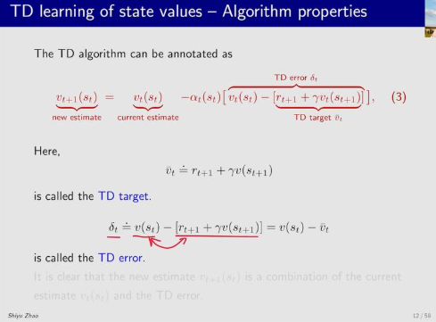
新的估计是由旧的估计加上修正项得到的。这个修正项后面的那部分（rt + 1 + γvt（st + 1））叫做td target，两个状态的差叫td error
为什么后面那部分叫做td target？
因为每次迭代的过程中，vt都是会趋近于vtarget
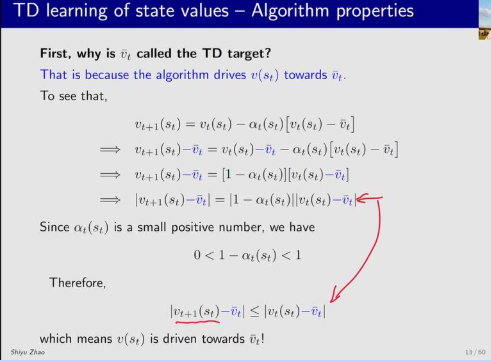
这是具体证明，式子变形了之后，可以看到左右两边是相等的，但是有一个系数α在，所以每次更新，vt + 1都要比vt更加靠近vtarget
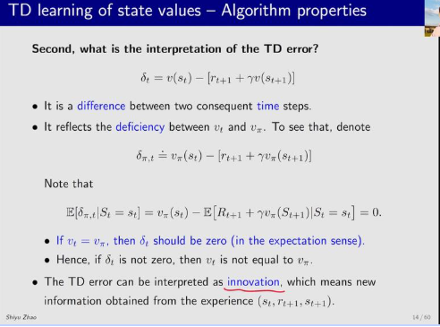
td error 的理解，td error的期望就是vt和vπ的差距，vπ是完备状态下的状态值。vt是当前迭代的状态值。，这俩作差，期望应该是0。如果俩相等说明状态值是完备的。如果不等那就是有差距的。
td误差可以用innovation来解释，这里指的是“新的信息”，可以认为每次更新一个experience就是引入新的信息。
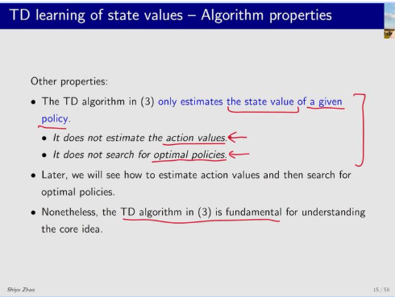
td算法的特点：
可以估计状态值，但是不能估计动作值，也不能搜索最优状态
td算法做的事也是求贝尔曼公式，但是是在没有模型的情况下求解
td算法引入了一个新的贝尔曼公式：bellman expection form：bellman expection form
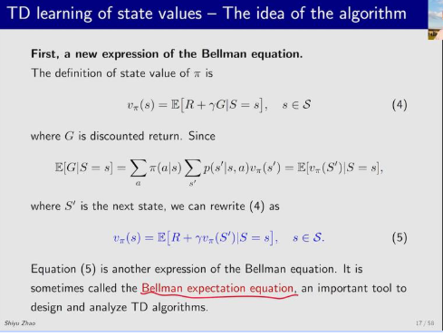
td算法也可以用rm算法来求解
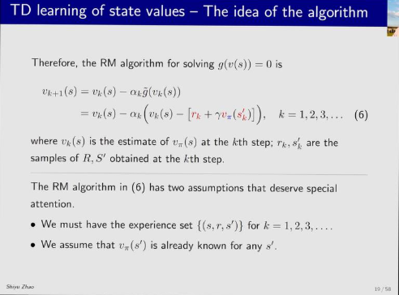
和td公式有点不一样 一个是vπ那里和td的公式有点不一样，td用的是vk。 但是这里，td算法可以直接点把vπ替换成vk，替换成他的估计值
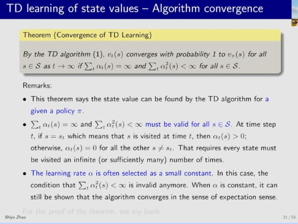
td算法求解状态值的前提条件，和rm算法基本上是一样的。比较一下td算法和mc算法，主要是有两点不同
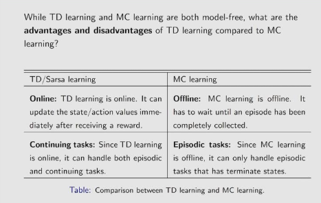
第一点：是td是online的，不需要等回合结束就可以立刻更新，而mc必须等回合结束。
第二点：是td可以用于无穷尽的任务，mc只能用于有回合的任务。
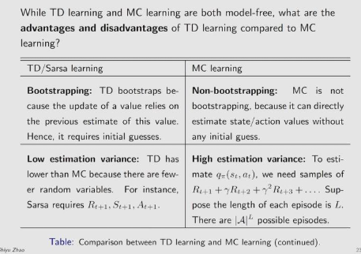
第三点：是td是一种自举的算法，在计算过程中需要依赖以前的状态进行自举，而mc算法不需要自举（不依赖以前的估计值）
第四点：是td是一种低方差的算法，计算过程中变量较少，mc算法在计算过程中用到了整个完整回合的数据，方差较大。如果我有5个动作，100步，那么mc算法他就有5的100次方种轨迹
TD学习估计动作值——sarsa
td算法是用来估计状态值的，不能估计动作值 sarsa 是估计动作值的，属于是policy evaluation，可以跟policy improment
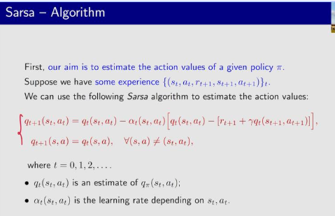
这里，q（s.a）是qπ（s,a）的一个估计值。 可以看到，这算法和td算法是一模一样，只不过v换成了q。 就是知道了新的s，a，就可以去更新q，如果没有访问到某个状态、动作，那么q值就保持不变。
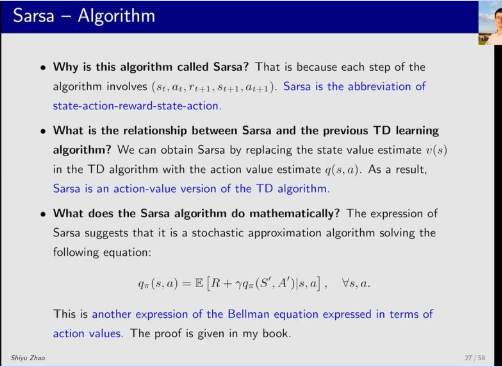
sarsa和td都是在求解贝尔曼公式，只是公式形式有所不同
sarsa的收敛性和证明都和td类似。
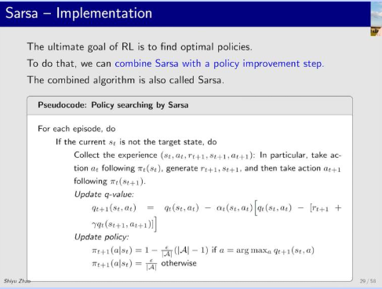
sarsa算法的伪代码如下（和策略改进过程结合） 策略改进的过程：还是和之前一样，用的epislon
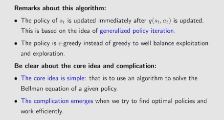
sarsa进行策略评估的时候只用了一个sa对就对策略进行更新。这是相比之前的办法最大的不同
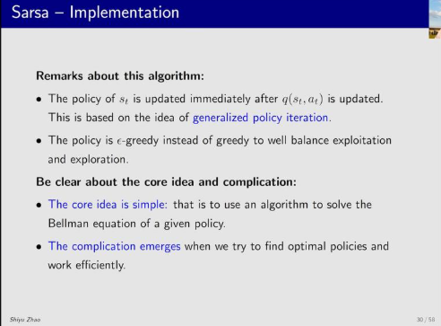
案例：sarsa算法走格子，找一条路径对应能走到终点的好状态，这个算法跑的结果如图所示，有几点必须要说： 第一点：不是所有状态都是最优的，探索比较少的地方，她的格子对应的策略不一定最优。 第二点：策略是不断在迭代中改进的，最开始好几百步猜得到目标，到后来就是几十步就能得到目标。
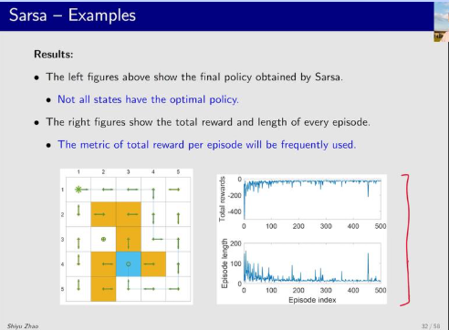
expected sarsa算法
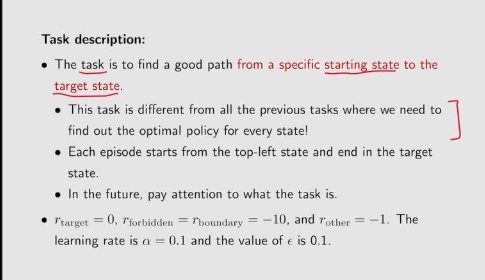
sarsa就是把td target里面的采样一个动作变成采样所有的动作，并且求和。只不过替换了一下，替换成了期望的形式
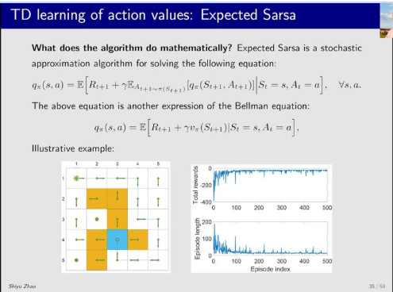
n-step sarsa
n-step sarsa是sarsa和mc的结合
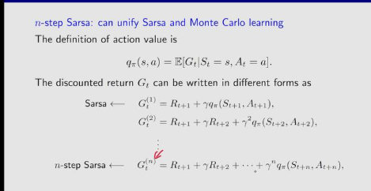
在q的定义里面，q是当前状态、动作条件下，能够获得的期望回报和。但是这个期望回报和是可以有多种定义的。 第一种定义就是sarsa的定义，只用一步的q迭代作为新的sarsa的值 第二种是迭代n步，用n步迭代的g作为新的q的估计 第三种就是迭代无穷步，对应mc算法
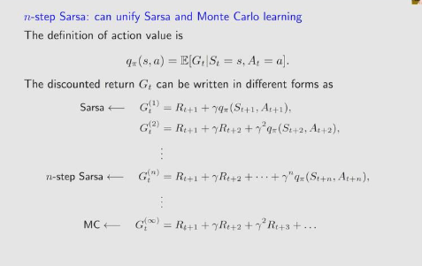
1-step sarsa 需要1个数据 n-step sarsa 需要n个数据 mc需要无穷多个数据
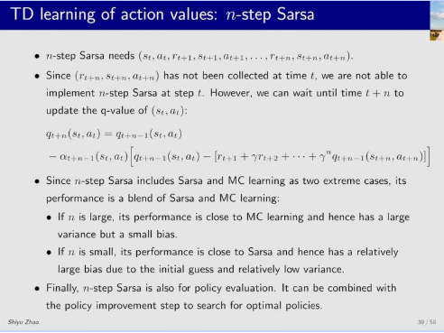
sarsa需要n步数据，也就是他虽然是online 但不是立即更新，而是需要收集t + n个数据再更新。
n step sarsa 是sarsa和mc的两个极端情况的折中 mc算法需要无穷步数据，对应的偏差比较小，方差大。 sarsa 算法需要1步数据 对应方差比较大
n-step就是靠n来平衡。
Q-learning
q-learning 直接做的是估计optimal action value，这个过程不需要policy improvement 和policy evaluation
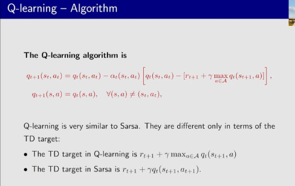
q-learning和sarsa
的区别在于，sarsa在算td target的时候需要把at + 1代进去算下一步的q，q-learning在计算td target
的时候
q-learning实际在做的也是求解贝尔曼方程，核心的公式表达不一样。
第一个不一样的地方是，他是基于动作值q而不是状态值v
第二个不一样的地方是，他写成了期望的形式
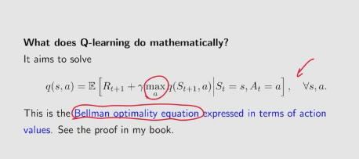
他最终求解的是最大的q值，最大的q对应最优的策略。
借此引入两个概念 on-policy 和off-policy
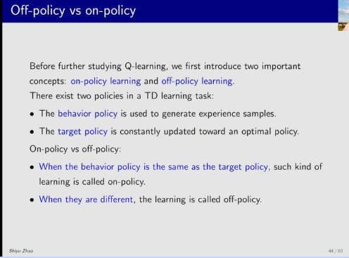
具体来说就是俩策略：behavior policy
和target policy
做动作的策略和行为的策略是不是同一个，如果是同一个这就是behavior policy，否则就是target policy
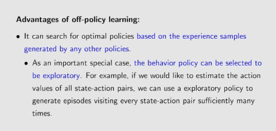
off-policy的好处就是可以拿别人的经验来学习
如何判断一个算法是on-policy还是off-policy
主要有两点：看算法的数学公式 第二点：确认算法里需要实现的事
以sarsa举例，他为什么是on-policy
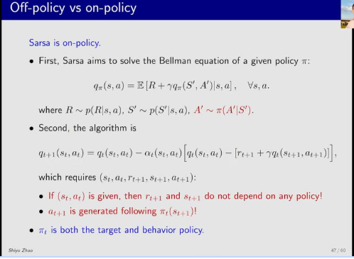
因为他在使用样本更新模型的时候，需要at + 1，这个at + 1又需要依赖策略模型。
也就是说在算法运行的时候，st，at这俩都是给定，rt + 1和st + 1’又是根据环境模型给出的（和rl无关，和world有关）
下一步的动作是用新策略生成的，target policy
和behavior policy是同一个，所以他的策略是on-policy
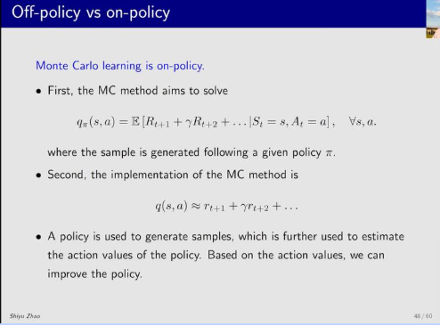
蒙特卡洛算法也是on-policy 蒙特卡洛方法的目的是求解
action value，目的是从很多的轨迹中得到一系列的return，从return中获得action value。
接下来，用return来估计qπ
得到qπ之后就拿来改进π了。
所以这里的π既是behavior policy
又是 target policy。
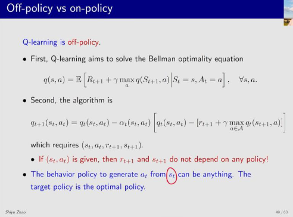
再来看q-learning，这是一个off-policy，它的原因是因为选动作的时候他是用maxq的策略去选，在更新模型的时候行为策略实际上是不依赖于连续轨迹的，可以通过##各种方式##采样得到。而目标策略是最优策略。这个时候，它的目标是最优策略，但是行为策略不依赖于这个最优策略，可以从任何策略中得到。
简单来说就是获取数据用的策略是不是我要用的最终策略，是就是on-policy。
q-learning 的伪代码
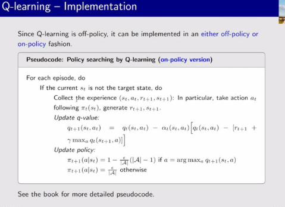
q-learning是off-learning也就是允许行为策略和目标策略不同，当然也允许这俩策略相同，这时候他就是on-policy。
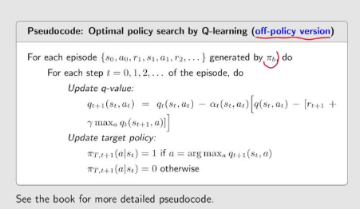
off-policy环境下，假设已经有了一系列轨迹，来自于任意环境，这个环境的策略是πb。
现在用这个πb的策略去更新我们自己的π。目标策略和图上一样，按照最大q来选动作，这时候他是贪心的，这个贪心的目标策略πt是最终用的策略。
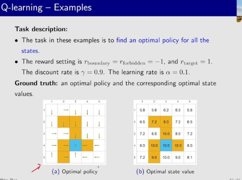
ql的案例，通过随机的环境策略πb采样（一百万步）每步5个动作各个的概率是0.2。
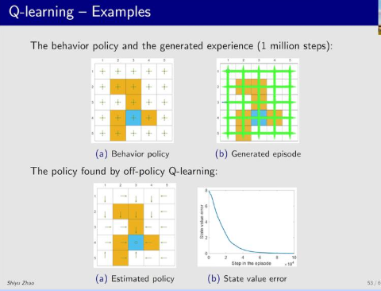
然后用off-policy去学习
如果数据的样本是比较差的（比如往右走的概率是很大，那么很多的步就没探索到）
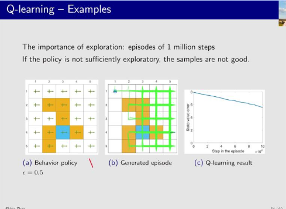
总结td学习的统一形式
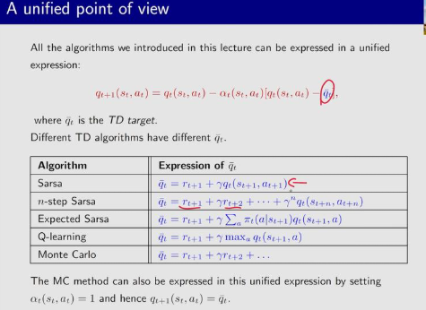
这一章介绍的算法都有统一的形式：
q(s, a)t + 1＝q(s，a)t − at(q − q̂)
其中后面的叫td target，后边俩相减的叫
td error
根据前面所学的知识，我们知道用这个式子迭代，能让q接近 td
target对应的这个q。 只是不同的算法有不同的td target 表达式。
他们在做的事都是求解统一的公式
这些方法本质上都是求解给定策略的贝尔曼公式
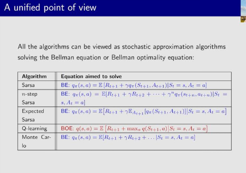
不同算法的区别的本质就是td-target的不同。